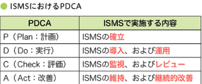

ITパス暗記ノート
1章
- ROE
(Return On Equity）
- 自己資本利益率＝当期純利益/自己資本×100
自己資本に対して、どれだけの利益を出したかを表す指標
大きいほど得
2章
3章
- IPO
（Initial Public Offering）
- 新規公開株式。自社の株式を株式市場に新規に公開すること
- RFM分析
- Recency（最終購入日）・Frequency（購入頻度）・Monetary（購入金額）の3指標で顧客を評価し、優良顧客や休眠顧客などに分類してマーケティング施策に活かす手法
- CSF
(Critical Success Factor)
- 重要成功要因。戦略目標を達成するために必要となる具体的な要因
- KPI
（Key Performance Indicator）
- 重要業績評価指標。目標達成に向けたプロセスの達成度を定量的に評価する指標
- ERP
(Enterprise Resource Planning)
- 企業の持つ資源＝「ヒト」「モノ」「カネ」「情報」を一か所に集めて管理し、有効活用するという考え方
- CRM
(Customer Relationship Management)
- 顧客情報を一元管理し、営業・マーケティング・カスタマーサポートの成果を高めるための仕組み
4章
- CGM
（Consumer Generated Media)
- 一般消費者（個人）がインターネットを通じて、自らの情報を不特定多数に向けて発信するメディアのこと。ブログや口コミサイト、SNSなど
- Society 5.0
- 「仮想空間」と「現実空間」を融合させたシステム。代表例：自動運転
5章
- EA
(Enterprise Architecture)
- 企業や政府など、大きな組織の情報システムを最適化するための手法
SoE
(Systems of Engagement)
ユーザーとのつながりを強化するシステム <=>SoR(Systems of Record)
BPR
（Business Process Reengineering）
業務プロセスを抜本的に再設計する手法である
BPM
（Business Process Management）
業務プロセスを継続的に改善する手法である
RPA
(Robotic Process Automation)
定型的な事務作業を自動化する（ソフトウェアロボット）
IaaS
（Infrastructure as a Service）
クラウド上で サーバー・ストレージ・ネットワークなどの基盤を提供するサービス形態で、企業が物理機器を持たずに IT インフラを利用できる仕組み。
PaaS
（Platform as a Service）
プラットフォームを提供するサービスである(Google App Engine.OSなど)
SaaS
（Software as a Service）
ソフトウェアを提供するサービスである(Gmail,Zoom)
Daas
(Desktop as a Service)
クラウド上に仮想デスクトップを構築し、PC・タブレットなどからネット経由で利用する仕組み。
BI
(Business Intelligence)
企業内のデータを収集・分析・可視化し、より良い意思決定を支援する仕組みや手法の総称
ROI(投資利益率)
(Return On Investment)
ROI ＝ 利益 ÷ 投資額
6章
７章
WBS
（Work Breakdown Structure）
プロジェクトの作業を階層的に要素分解した図
8章
SLM
(Service Level Management)
サービスレベル管理とは、サービスの提供者と利用者が合意した「サービスレベル」を維持・改善するための活動。
SLMでは主にPDCAの手法を使ってサービスレベルを維持・改善する
SLA
(Service Level Agreement)
サービスレベルの合意書。SLAの目的は、サービスの範囲と品質を明確にすることである
BCM
（Business Continuity Management）
災害が起きても事業を継続させるための経営手法
BCP
(Business Continuity Plan)
事業をいかに継続するかをまとめた計画
ITガバナンス
ITを活用して、企業のあるべき姿に導く仕組みを企業に組み込むこと
9章
10章
TCO
（Total Cost of Ownership)
初期コストと、運用コストの総額
MTBF
（Mean Time Between Failures）
平均故障間隔。システムが故障せずに正しく動いていた時間の平均値。システムの信頼性を表す指標の1つ
・MTBF ＝ 稼働時間の合計 ÷ 故障の回数
MTTR
（Mean Time To Repair)
平均修理時間。システムが稼働していなかった時間の平均値。システムの保守性を表す指標の1つ
・MTTR ＝ 故障時間の合計 ÷ 故障の回数
11章
12章
13章
14章
SMTP
（Simple Mail Transfer Protocol）
電子メールを送信するためのプロトコル
POP
（Post Office Protocol)
電子メールを受信するためのプロトコル
IMAP
（Internet Message Access Protocol）
メールサーバ上で電子メールを閲覧するためのプロトコル
NAT
（Network Address Translation）
プライベートIPアドレスとグローバルIPアドレスを相互変換する技術である
MVNO
（Mobile Virtual Network Operator）
仮想移動体通信事業者。他社の無線通信インフラを借り受け、通信サービスを行う事業者
FTTH
（Fiber To The Home）
光ファイバを使った家庭向けの通信サービス
15章
ISMS
(Information Security Management System)
情報セキュリティマネジメントシステムとは、ISO/IEC 27001に基づき組織の情報資産を「機密性・完全性・可用性」の3要素で保護するための管理体制（仕組み）

IDS
(Instracution Detection System)
侵入検知システム。外部から不正アクセスがあった際にシステム管理者に知らせる
IPS
(Instraction Prevention System)
侵入防止システム。不正アクセスがあった際、管理者に知らせると同時にアクセスを遮断する